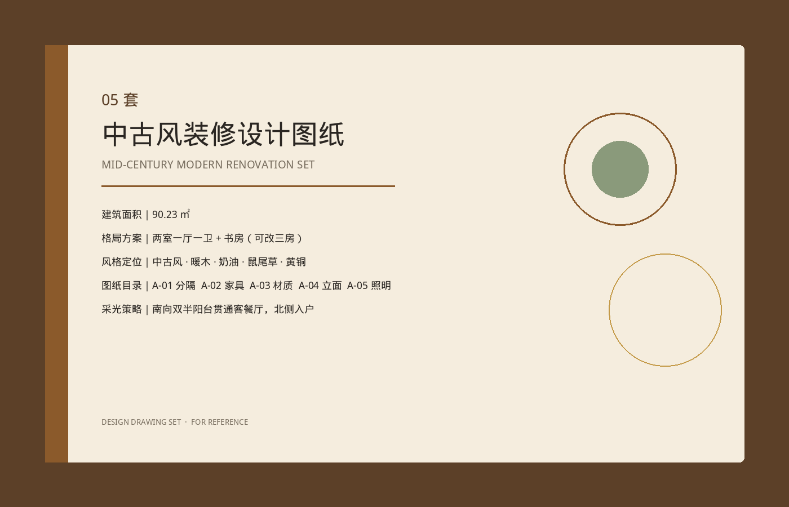
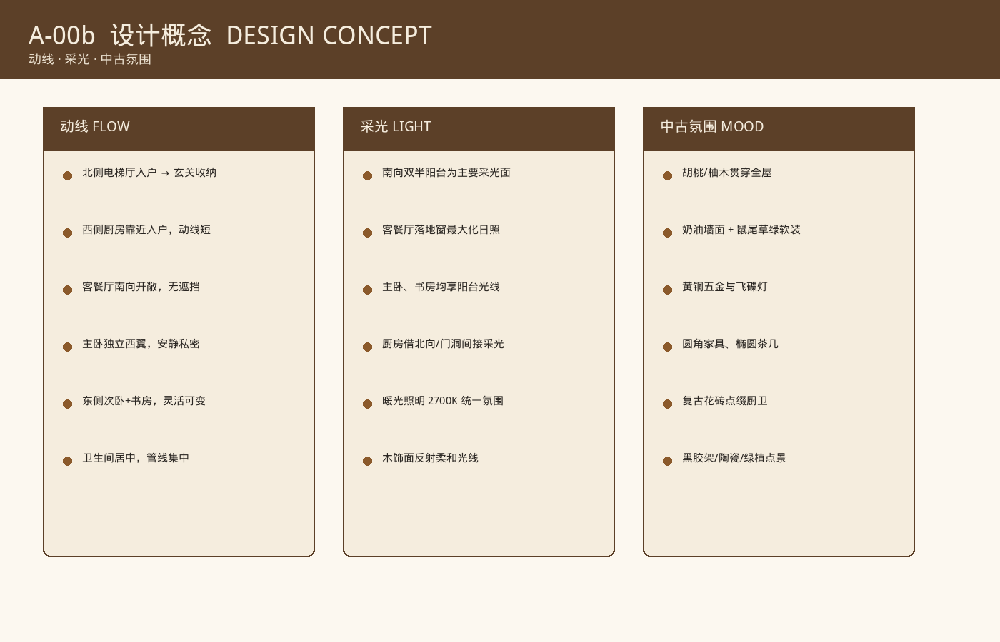
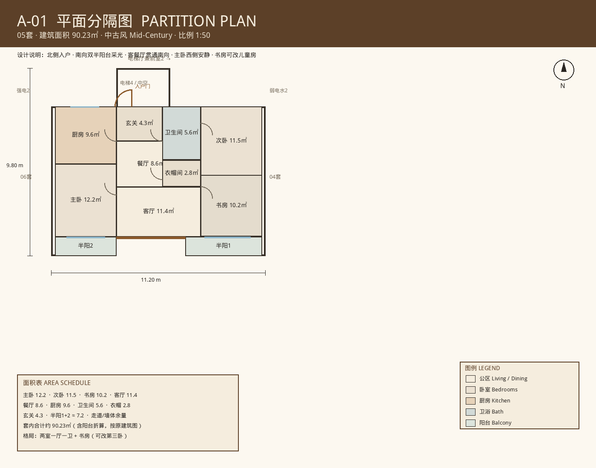
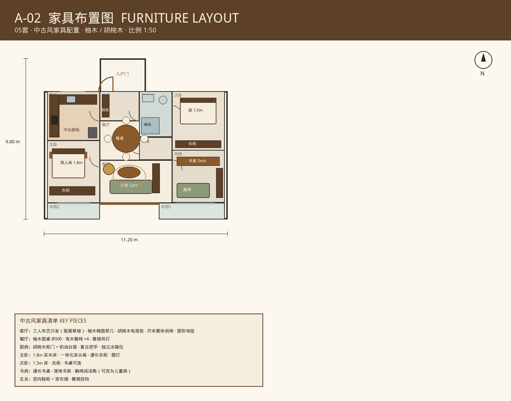
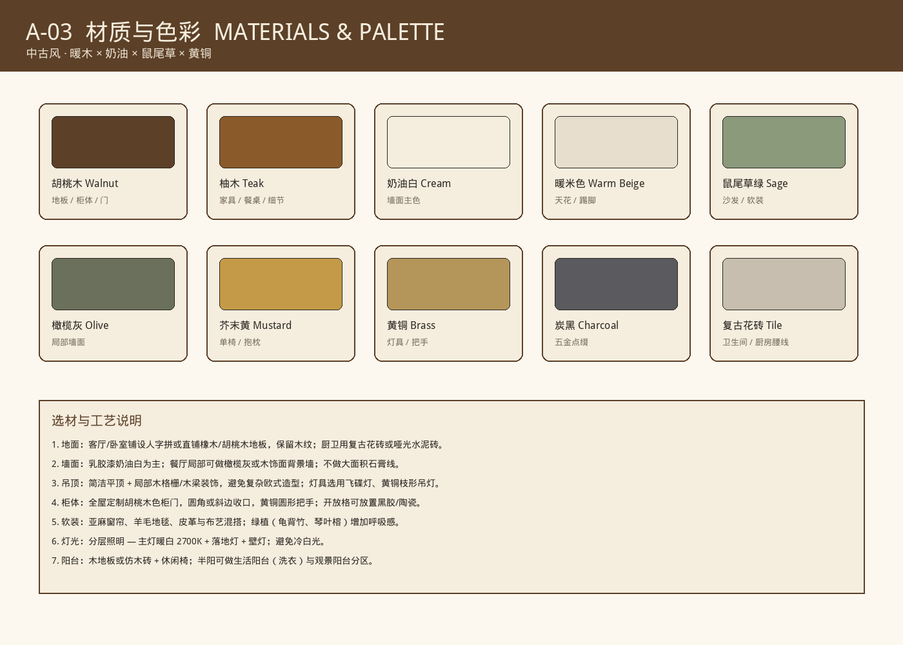
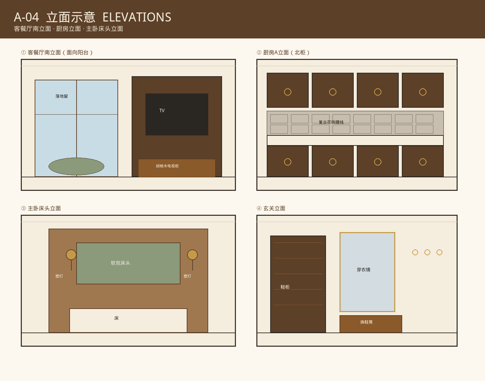
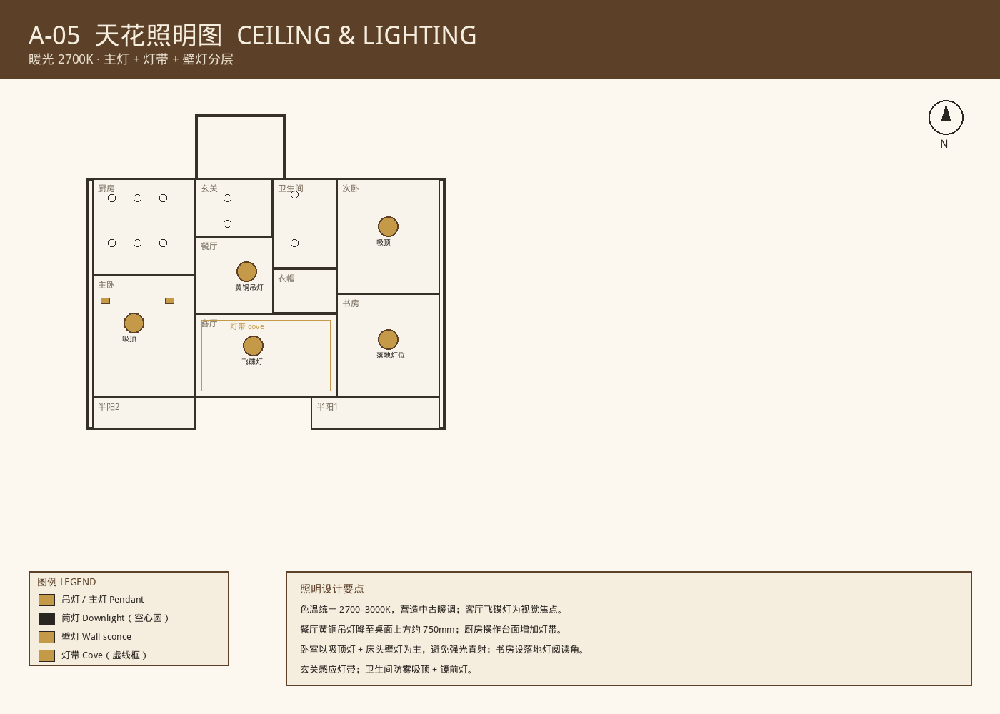
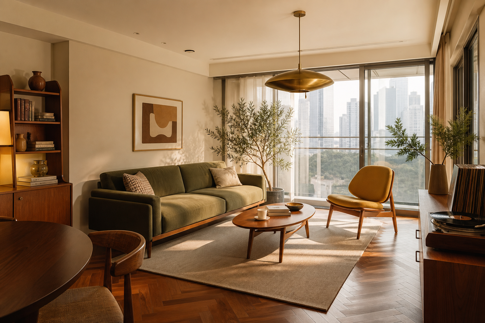
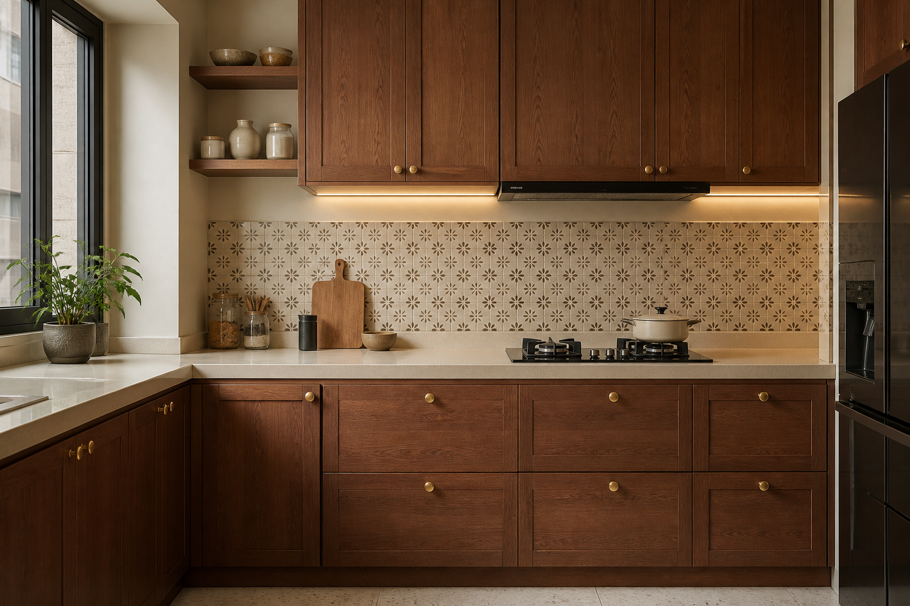
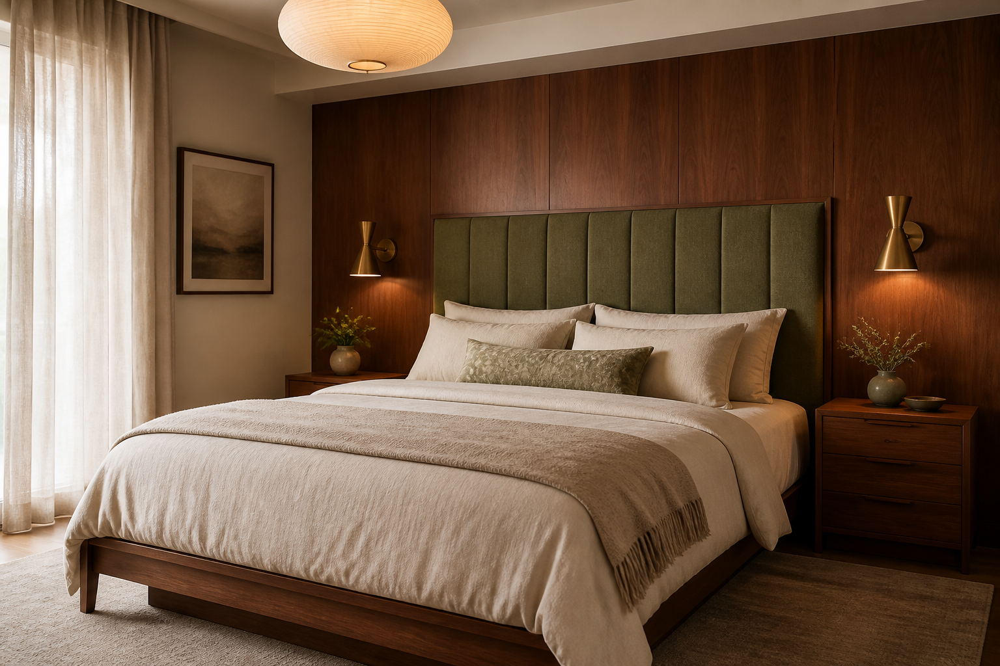

格局策略
北侧入户，西厨东卧，客餐厅贯通南向。书房可改第三卧或儿童房，适应家庭结构变化。
以胡桃木与奶油色为底，鼠尾草绿与黄铜为点缀——为 90.23㎡ 的 05 套量身定制的中古氛围居所。
动线清晰 · 南向采光优先 · 中古暖调贯穿


北侧入户，西厨东卧，客餐厅贯通南向。书房可改第三卧或儿童房，适应家庭结构变化。
比例约 1:50 · 依据原建筑轮廓推拟（电梯厅北入、南向双半阳台）

中古家具配置 · 柚木餐桌 · 鼠尾草沙发 · 胡桃木柜体

暖木 × 奶油 × 鼠尾草 × 黄铜

客餐厅南立面 · 厨房柜体 · 主卧床头 · 玄关

2700K 暖光分层 · 飞碟灯 / 黄铜吊灯 / 灯带 / 壁灯

客厅 · 厨房 · 主卧意境图（风格示意，非实景渲染）


